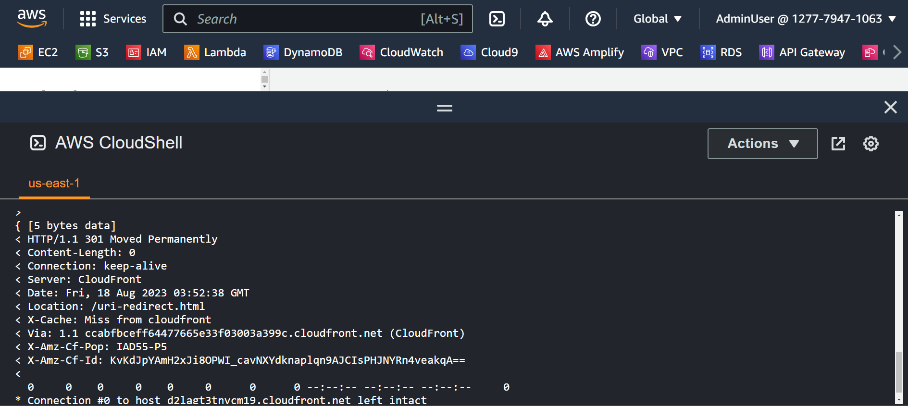

URI based Redirects
Trong phần này, chúng ta sẽ bắt đầu với một trường hợp đơn giản có thể dễ dàng hiểu được bằng cách sử dụng Lambda@Edge vì trường hợp này có thể được cached, do đó sẽ tốt nhất khi xử lí bằng các Lambda@Edge.
Trường hợp này thường được sử dụng để redirect users vì một lí do nào đó khi request URI mà admin không muốn users đó xem hoặc URI có thể không khả dụng nữa. Ví dụ, user có thể gửi request đến /uri-main.html, tuy nhiên, admin muốn tất cả request đó được thực hiện bởi /uri-redirect.html
Step 1: Tạo ra Cache Behavior cho trường hợp này
Để thực hiện được trường hợp này, đầu tiên bạn sẽ tạo ra một cache behavior cụ thể. Các bước sau dây sẽ hướng dẫn để làm trường hợp này.
- Đi đến CloudFront console. Các bạn sẽ thấy Distribution được tạo ra bởi CloudFormation template, nó sẽ được xác định bởi Edge Redirect Workshop Distribution như ở mục Description.

- Chọn Distribution đó sau đó chọn vào mục Behaviors.

- Click vào nút Create Behavior.

- Ở mục Path pattern, chúng ta nhập
/uri-main.html, ở dưới là phần Origin and origin groups, chúng ta chọn myS3Origin. Ở phần Viewer protocol policy, chúng ta chọn Redirect HTTP to HTTPS. Những mục còn lại chúng ta sẽ để mặc định và click vào nút Create behavior ở cuối trang.

Step 2: Tạo Lambda@Edge function và publish new version
Bước này sẽ là quá trình tạo ra function của chúng ta cùng với version của nó. Các Lambda@Edge functions cần được CloudFront Distribution refer dựa vào version ARN của chúng chứ không phải main function ARN của chúng.
- Đi vào Lambda Console ỏ AWS Region us-east-1, click vào nút Create function.

- Ở trang Create function, đặt tên cho function của chúng ta là
edge-uri-redirect, chọn Python 3.9 cho phần Runtime. Ở phía dưới, chúng ta mở mục Change default execution role rồi chọn Use an existing role, chúng ta chọn edge-redirect-lambda-role (đây là role được tạo từ CloudFormation template). Cuối cùng là click vào nút Create function.

- Khi function được tạo xong, chúng ta ở trang chính của function đó. Ở phần Code ở dưới, chúng ta copy đoạn code dưới đây và paste vào phần Code source.
import json
def lambda_handler(event, context):
get_uri = event['Records'][0]['cf']['request']['uri']
print(get_uri)
if (get_uri == '/uri-main.html'):
response = {
'status': '301',
'statusDescription': 'Permanent Redirect',
'headers': {
'location': [{
'key': 'Location',
'value': '/uri-redirect.html'
}]
}
}
return response
else:
request = event['Records'][0]['cf']['request']
return request
Ở đoạn code này được dùng như một AWS CloudFront function. Nó phục vụ cho CloudFront event handler và implement logic cho URL redirection dựa vào URI được request. Function lambda_handler là entry point của Lambda function, nó gồm 2 parameters là event và context. Function này extract URI được request từ CloudFront event. Nếu request URI là /uri-main.html, code sẽ trả về một response với status code 301 và location header được set là /uri-redirect.html. Nếu URI không phải là /uri-main.html, code sẽ trả về request object.

- Tiếp theo, click vào nút Deploy để code của lambda function của chúng ta được commit. Khi code của chúng ta được deploy thành công, chúng ta sẽ publish version mới cho lambda này. Click vào nút Actions ở góc bên phải, chúng ta chọn Publish new version.

Chúng ta nhập edge-uri-redirect-v1 cho phần Version description và click vào nút Publish.

Step 3: Kết hợp Lambda Function với CloudFront Behavior
-
Quay trở lại lambda function console và mở function edge-uri-redirect.
-
Click vào + Add trigger

- Ở trang Trigger configuration, chúng ta chọn CloudFront cho phần source. Sau đó click vào Deploy on Lambda@Edge.

- Có một cửa số mới mở ra, ở phần Distribution, chúng ta chọn distribution được tạo từ CloudFormation template. Phần Cache behavior, chúng ta chọn /uri-main.html. Ở phần CloudFront event, chọn Origin request. Đánh dấu vào ô Confirm deploy to Lambda@Edge và click vào nút Deploy.

Step 4: Set up client cho testing
Để test redirect cụ thể, chúng ta sẽ cần một client để chạy curl commands. Cách dễ dàng đó là tạo CloudShell Environments. CloudShell là một shell có sẵn trong AWS console và chúng ta có thể chạy những Linux command từ nó. Đi đến CloudShell Console và chờ đến khi terminal sẵn sàng để dùng.
Nếu CloudShell không hoạt động thì nếu bạn đang thực hành bài workshop này ở Linux/MacOS client thì hai hệ điều hành này đã có sẵn curl và bạn chỉ cần chạy command ở client đó. Nếu bạn đang thực hành trên Windows thì hãy tận dùng online curl tools như cái này. Có thể chạy EC2 instance hoặc Cloud9 IDE từ AWS COnsole để chạy commands.
Step 5: Test redirect configuration
-
Đi đến CloudShell Console.
-
Trong phần test, chúng ta sẽ chạy câu lệnh curl để gửi http request đối với distrubtion của chúng ta, để làm như vậy, chúng ta cần copy Distribution domain name từ CloudFront console nơi chúng ta có thể tìm thấy.

Khi đã tìm thấy distribution domain name, copy câu lệnh sau và thay thế domain name của chúng ta vào.
curl -v -o /dev/null https://<YOUR-DISTRIBUTION-DOMAIN-NAME>/uri-main.html
- Sau khi build câu lệnh trên từ cloudshell, chúng ta sẽ thấy kết quả như dưới đây.

Chúng ta có thể thấy ở kết quả trên, request này nhận response HTTP 301, biểu thị redirect và Location header là URI nơi mà client được redirect đến.
- Bây giờ, chúng ta chạy lại cùng câu lệnh trên. Và xem sự khác biệt.

Sự khác biệt ở lần chạy câu lệnh này lại là giá trị của X-Cache header. Request bây giờ nhận response được redirect và đã được cache từ lần chạy câu lệnh trước đó. Có nghĩa là Lambda@edge của chúng ta không cần trigger lại, tiết kiệm thời gian và chi phí.
Chúng ta đã deploy thành công redirect đầu tiên bằng Lambda@Edge và đã test xong. Bây giờ chúng ta di chuyển sang trường hợp tiếp theo.